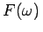
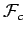
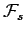
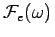
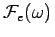
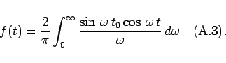

Inhalt Index DeskTop Bronstein

 Integraltransformationen Fourier-Transformation Eigenschaften der Fourier-Transformation Fourier-Transformation und Umkehrtransformation
Integraltransformationen Fourier-Transformation Eigenschaften der Fourier-Transformation Fourier-Transformation und Umkehrtransformation


Auf Grund der Formeln (15.76a,b,c) brauchen entweder keine speziellen Tabellen für Korrespondenzen der FOURIER-Sinus- und FOURIER-Kosinus-Transformation bereitgestellt zu werden, oder man tabelliert die FOURIER-Sinus- und FOURIER-Kosinus-Transformationen und berechnet daraus mit Hilfe von (15.76a,b,c) .
Im Tabellenanhang sind für viele Funktionen FOURIER-Kosinus-Transformationen  und FOURIER-Sinus-Transformationen  angegeben, für einige Funktionen FOURIER-Transformationen  und exponentielle FOURIER-Transformationen .
und exponentielle FOURIER-Transformationen .
| Beispiel |
|
Die Funktion des unipolaren Rechteckimpulses Man erhält für die Koeffizienten gemäß (15.66b,c) 
|